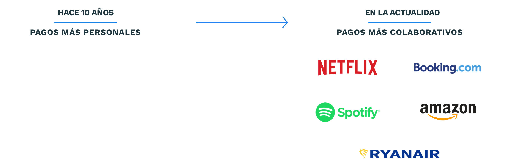
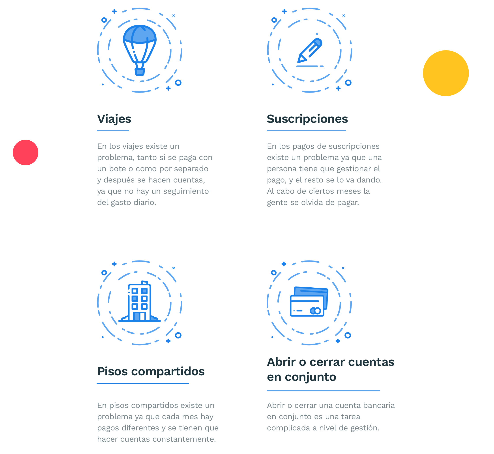

Tava
Product
Design
Año
2018
Tava es un "concept" de un producto desarollado para CaixaBank, sobre pagos colavorativos. CaixaBank lleva años desarollando productos digitales que solucionen las necesidades de sus clientes, en 2016 crea ImaginBank que es el primer banco que nace en España gestionado al 100% atraves del movil, el objetivo de CaixaBank es ofrecer a un publico joven las facilidades de gestionar todas sus cuentas a través del medio que mas utilizan, y de esta manera captar hasta finales de 2017 captar medio millón de clientes nuevos.

¿Cuál es el contexto?
La sociedad esta cambiando la forma en la que realizan los pagos, hace 10 años cada persona gestionaba su propia economía y no se compartían gastos. Hoy en día por la incrlusión de de plataformas que ofrecen servicios colaborativos, la sociedad tiene la necesidad de realizar pagos que conjuntos con otras personas.
¿Cuál es nuestro mercado?
En el mercado actual de los pagos colavorativos nos encontramos dos vertientes. La vertiende bancária que facilitan los pagos entre personas y la de las aplicaciones que ayudan a los usurios a gestionar las cuentas colaborativas, pero estas dos vertientes no se comunican ente ellas. Creo que la oportunidad de CaixaBank sería un producto que facilite a los usurios la forma de pago y que a la vez les ayude a gestionar las cuentas.

¿Cuáles son los problemas?
¿Cuál es nuestro objetivo?
-Dar a los usuarios un producto que solucione los problemas que tienen al hacer pagos colaborativos
-Un producto para incrementar un 12% el negocio de CaixaBank